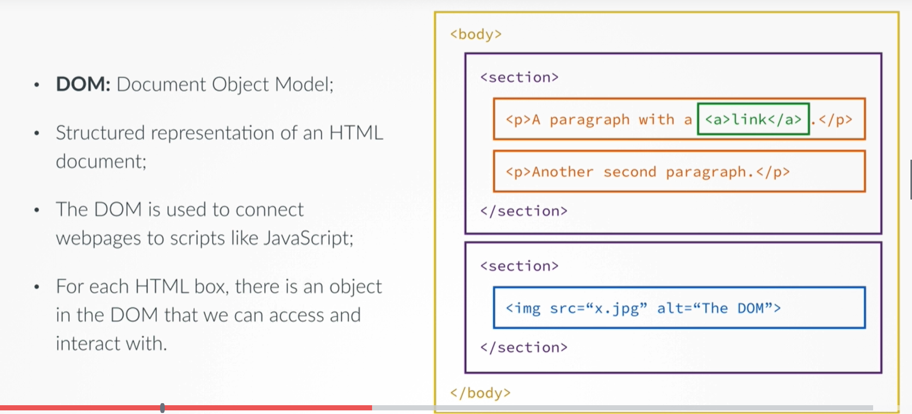
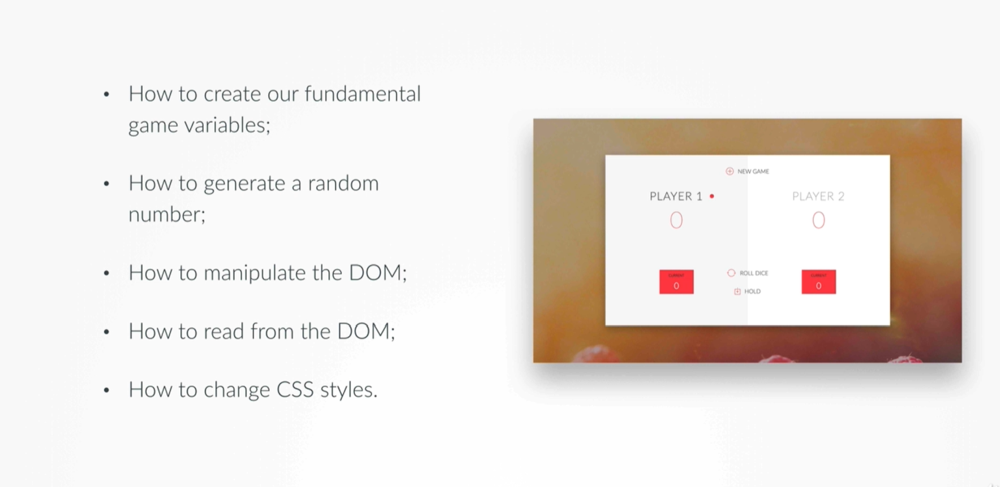
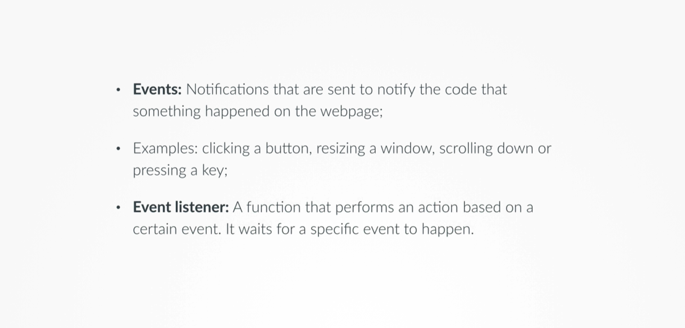
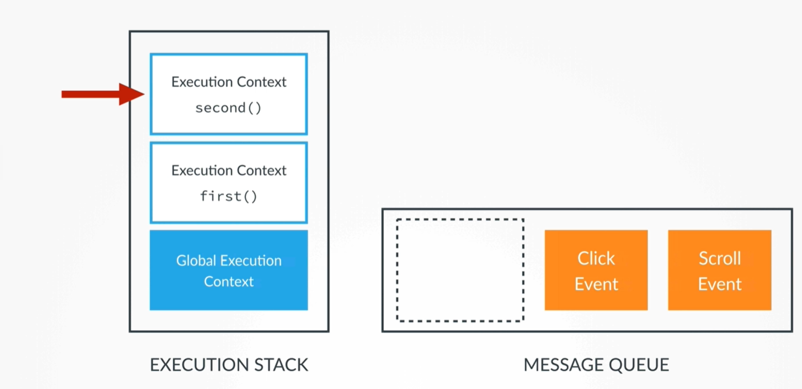
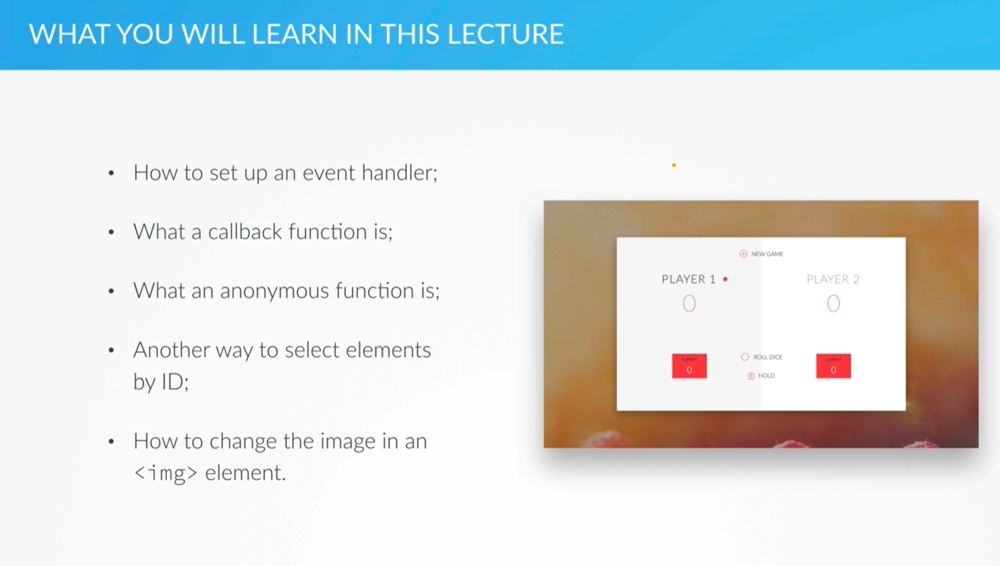

go back |
DOM (Dominant Object Model) is a structured representation of an HTML document. It is used to connect webpages to scripts like JavaScript. For each HTML box, there is an object in the DOM which can be interacted with in JavaScript.

Using JavaScript methods you can interact with and alter the HTML through the DOM.

var scores, roundScore, activePlayer, dice;
scores = [0,0];
roundScore = 0;
activePlayer = 0; //`1` = player 1, `0` = player 2
dice = Math.floor(Math.random()*6)+1;
console.log(dice);
document
The querySelector() is a method to select objects from the DOM. It selects objects in a similar way as
in CSS. It selects the first object it finds however.
To select element with id='score-0' and assign the variable dice to it:
document.querySelector('#current-0').textContent = dice;
To account for the second player and with the help of type coersion, the string above can be altered to
account for the var activePlayer:
document.querySelector('#current-' + activePlayer).textContent = dice;
Another method to alter the HTML is using the .innerHTML selector. With this method we can do things
like changing the inline text styling:
document.querySelector('#current-' + activePlayer).innerHTML = '<em>' + dice + '</em>';
The above line results in a emphasised current-score text. Doing this with the
.textContent selector wouldn't have resulted in the same way; it would have showed the HTML code
<em> without formatting it.
The querySelector can also be used to read and store values from the DOM, and store HTML page element
values in variables.
var x = document.querySelector('#score-0').textContent;
console.log(x);
To alter CSS styles using the querySelector we write .style.[css property] = '[property
value]';, for example:
document.querySelector('.dice').style.display = 'none';


Looking at the above diagram of the Execution Stack and Message Queue, in order of priority:
Here you can find the even listeners, which will get their own execution context object to be processed.

document.querySelector('.btn-roll').addEventListener('click')
The .addEventListener selector is used to listen for webpage events. It takes arguments, in
this case ('click'). All event names can be found here: [MDN Event Reference](https://link).
The inline way of calling a function in JS:
function btn () {
//Do something here
}
btn();
Calling a function with the event listener:
document.querySelector('.btn-roll').addEventListener('click', btn);
The main difference is that for function btn() in the event listener the parenthesis' are excluded.
This is called the callback function; the event listener will call the function for you.
What if we don't want an external function called? Anonymous functions can be placed right within the event listener argument, such as:
.addEventListener('click', function () {
//function here
});
Anonymous functions are one purpose and cannot be used anywhere outside of the event.
Applying the use of event listeners and anonymous functions we can start on creating a button behaviour for the dice roll.
document.querySelector('.btn-roll').addEventListener('click', function () {
// 1. random number
dice = Math.floor(Math.random() * 6) + 1;
//2. display result
---
//3. update round score only IF the rolled number was NOT a 1
---
});
//2. display result
var diceDOM = document.querySelector('.dice'); //simplifies selector
//to make the dice visible again
diceDOM.style.display = 'block';
//to display the right dice picture
diceDOM.src = 'dice-' + dice + '.png';
Used above:
diceDOM to easily reuse document.querySelector and simplify the code.block to make it visible again..src to set the object to the correct png file.The .getElementById does the same thing as the querySelector, but points at id elements in the HTML directly. It is a bit faster and cleaner than using querySelector.
document.getElementById('score-0').textContent = '0';
To set the player scores to zero, we use the above code.
if (dice !== 1) {
//add score
roundScore += dice;
//Update current score
document.querySelector('#current-' + activePlayer).textContent = dice;
} else {
//next player
The above lines of code check if the dice result isn't 1, and then add it to the round score.
To switch turns between players, the Ternary operator can be used:
} else {
//Switch to other player if activePlayer === 0
activePlayer === 0 ? activePlayer = 1 : activePlayer = 0;
}
If the current player rolls a 1, the turn is given over to the other player, but the roundScore should also be set back to 0.
} else {
//Switch to other player if activePlayer === 0
activePlayer === 0 ? activePlayer = 1 : activePlayer = 0;
roundScore = 0;
While this updates the internal value of the roundScore, it does not yet update the displayed score. We can change the displayed roundScore back to 0 with the following lines:
} else {
//Switch to other player if activePlayer === 0
activePlayer === 0 ? activePlayer = 1 : activePlayer = 0;
roundScore = 0;
//setting display to 0
document.getElementById('current-0').textContent = '0';
document.getElementById('current-1').textContent = '0';
}
To indicate the current player, the page shows the player id in bold letters, shows a dot with the id, and makes the player side highlighted.
In the html, the player side divs have a modifier class name active.
<div class="player-0-panel active">
Using JavaScript we can remove and add classes to HTML elements.
document.querySelector('.player-0-panel').classList.remove('active');
document.querySelector('.player-1-panel').classList.add('active');
The above lines switch the active class between player-0-panel and player-1-panel by adding and
removing.
However, this would only switch the sides in one direction and not back around. To move the class inbetween elements repeatedly you can use Toggle
//One direction
// document.querySelector('.player-0-panel').classList.remove('active');
// document.querySelector('.player-1-panel').classList.add('active');
//Both directions
document.querySelector('.player-0-panel').classList.toggle('active');
document.querySelector('.player-1-panel').classList.toggle('active');
Hold & DRYNext in the project we're setting up the 'Hold score' button of the game.
document.querySelector('.btn-hold').addEventListener('click', function () {
// add current score to global score,
// update UI,
// and check if player won the game
// else next player
})
The function should add the player score to their global score, like:
// add current score to global score,
scores[activePlayer] += roundScore; //adds the activeScore to the players global score
Then to update the UI:
// update UI,
document.querySelector('#score-' + activePlayer).textContent = scores[activePlayer];
The above code selects the id='score-[activeplayer:1/0] and adds the relevant score to it. *Pay
attention how [activePlayer] is being used to always select the values of the relevant player.
Don't repeat yourself. To switch the turn to the other player we could repeat the lines of code from before, but a core principle in coding is to not repeat yourself if unnecessary! - so instead if adding…
document.getElementById('current-0').textContent = '0';
document.getElementById('current-1').textContent = '0';
document.querySelector('.player-0-panel').classList.toggle('active');
document.querySelector('.player-1-panel').classList.toggle('active');
document.querySelector('.dice').style.display = 'none';
…again, we can instead follow the DRY-Principle and implement a new function, called
nextPlayer():
function nextPlayer() {
//Switch to other player if activePlayer === 0
activePlayer === 0 ? activePlayer = 1 : activePlayer = 0;
roundScore = 0;
//setting display to 0
document.getElementById('current-0').textContent = '0';
document.getElementById('current-1').textContent = '0';
document.querySelector('.player-0-panel').classList.toggle('active');
document.querySelector('.player-1-panel').classList.toggle('active');
document.querySelector('.dice').style.display = 'none';
}
Now we can just plug in nextPlayer() wherever this code is needed, following the DRY-Principle.
Next, the game should check for a winner before handing over a turn by using an if statement to see if the score of any player has exceeded a 100. If not, then the game will pass the turn normally.
// and check if player won the game
if (scores[activePlayer] >= 100) {
document.querySelector('#name-' + activePlayer).textContent = 'Winner!';
} else {
nextPlayer();
}
Then remove the dice once the game is finished:
// and check if player won the game
if (scores[activePlayer] >= 100) {
document.querySelector('#name-' + activePlayer).textContent = 'Winner!';
document.querySelector('.dice').style.display = 'none';
} else {...
Now, the UI should be altered to show the winner's side and remove the activePlayer indicator, which is done by
removing the active modifier class, and adding the winner modifier class to the winner.
document.querySelector('.player-' + activePlayer + '-panel').classList.add('winner');
document.querySelector('.player-' + activePlayer + '-panel').classList.remove('active');
The game is almost finished, but it still needs a way to initialize a new game.
To make the new game button work, let's create a function init() that resets all values and
visual changes, and sets the turn to player 0 once pressed.
function init() {
scores = [0, 0];
roundScore = 0;
activePlayer = 0; //`0` = player 1, `1` = player 2
document.querySelector('.dice').style.display = 'none'; //setting dice display to 'none'
document.getElementById('score-0').textContent = '0';
document.getElementById('score-1').textContent = '0';
document.getElementById('current-0').textContent = '0';
document.getElementById('current-1').textContent = '0';
document.getElementById('name-0').textContent = 'Player 1';
document.getElementById('name-1').textContent = 'Player 2';
document.querySelector('.player-0-panel').classList.remove('winner');
document.querySelector('.player-1-panel').classList.remove('winner');
document.querySelector('.player-0-panel').classList.remove('active');
document.querySelector('.player-1-panel').classList.remove('active');
document.querySelector('.player-0-panel').classList.add('active');
}
State variables are a general concept in coding, not just in JavaScript.
A state variable tells you the condition of a system, and helps letting you know the state of something. We check this by creating a variable which is updated based on the state of the game we're writing.
A state variable looks something like:
var gamePlaying = true;
Throughout the code of the game, we check on the state variable gamePlaying = true/false using an
if-statement.
if (gamePlaying { ... });
A place to check if gamePlaying = true; is when the player is about to make a move, so lets place the
if-statement around the roll dice function:
document.querySelector('.btn-roll').addEventListener('click', function () {
if (gamePlaying) {
// 1. random number
dice = Math.floor(Math.random() * 6) + 1;
//2. display result
var diceDOM = document.querySelector('.dice'); //simplifies selector
//to make the dice visible again
diceDOM.style.display = 'block';
//to display the right dice picture
diceDOM.src = 'dice-' + dice + '.png';
//3. update round score only IF the rolled number was NOT a 1
if (dice !== 1) {
//add score
roundScore += dice;
document.querySelector('#current-' + activePlayer).textContent = roundScore;...
There are also places in the code where the game is not in progress, or gamePlaying = false;, for
example after a player has won:
// and check if player won the game
if (scores[activePlayer] >= 100) {
document.querySelector('#name-' + activePlayer).textContent = 'Winner!';
document.querySelector('.dice').style.display = 'none';
document.querySelector('.player-' + activePlayer + '-panel').classList.add('winner');
document.querySelector('.player-' + activePlayer + '-panel').classList.remove('active');
gamePlaying = false;
Lastly, the game needs to be enables and gamePlaying set to true when init() is run.
function init() {
scores = [0, 0];
roundScore = 0;
activePlayer = 0; //`0` = player 1, `1` = player 2
gamePlaying = true;
...
var scores, roundScore, activePlayer, dice, gamePlaying;
//Setup new game
init();
//Function for 'new game' button
document.querySelector('.btn-new').addEventListener('click', init);
//Roll function
document.querySelector('.btn-roll').addEventListener('click', function () {
if (gamePlaying) {
// 1. random number
dice = Math.floor(Math.random() * 6) + 1;
//2. display result
var diceDOM = document.querySelector('.dice'); //simplifies selector
//to make the dice visible again
diceDOM.style.display = 'block';
//to display the right dice picture
diceDOM.src = 'dice-' + dice + '.png';
//3. update round score only IF the rolled number was NOT a 1
if (dice !== 1) {
//add score
roundScore += dice;
document.querySelector('#current-' + activePlayer).textContent = roundScore;
} else {
nextPlayer();
}
}
});
//Hold function
document.querySelector('.btn-hold').addEventListener('click', function () {
if (gamePlaying) {
// add current score to global score,
scores[activePlayer] += roundScore; //adds the activeScore to the players global score
// update UI,
document.querySelector('#score-' + activePlayer).textContent = scores[activePlayer];
// and check if player won the game
if (scores[activePlayer] >= 100) {
document.querySelector('#name-' + activePlayer).textContent = 'Winner!';
document.querySelector('.dice').style.display = 'none';
document.querySelector('.player-' + activePlayer + '-panel').classList.add('winner');
document.querySelector('.player-' + activePlayer + '-panel').classList.remove('active');
gamePlaying = false;
} else {
nextPlayer();
}
}
});
//Switch turns function
var nextPlayer = function () {
//Switch to other player if activePlayer === 0
activePlayer === 0 ? activePlayer = 1 : activePlayer = 0;
roundScore = 0;
//setting display to 0
document.getElementById('current-0').textContent = '0';
document.getElementById('current-1').textContent = '0';
document.querySelector('.player-0-panel').classList.toggle('active');
document.querySelector('.player-1-panel').classList.toggle('active');
document.querySelector('.dice').style.display = 'none';
}
//New game function
function init() {
scores = [0, 0];
roundScore = 0;
activePlayer = 0; //`0` = player 1, `1` = player 2
gamePlaying = true;
document.querySelector('.dice').style.display = 'none'; //setting dice display to 'none'
document.getElementById('score-0').textContent = '0';
document.getElementById('score-1').textContent = '0';
document.getElementById('current-0').textContent = '0';
document.getElementById('current-1').textContent = '0';
document.getElementById('name-0').textContent = 'Player 1';
document.getElementById('name-1').textContent = 'Player 2';
document.querySelector('.player-0-panel').classList.remove('winner');
document.querySelector('.player-1-panel').classList.remove('winner');
document.querySelector('.player-0-panel').classList.remove('active');
document.querySelector('.player-1-panel').classList.remove('active');
document.querySelector('.player-0-panel').classList.add('active');
};
That's the end of building a fully functional dice game. However, there is more in the coding challenges below.
Change the game to follow these rules: